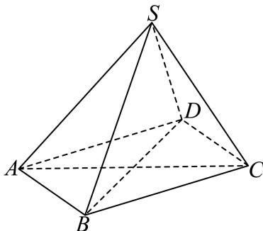
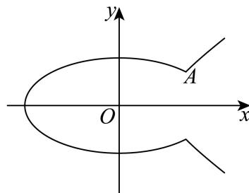

填空题
按本区原卷题号顺序排列。
青浦 · 第1题 ★☆☆☆☆ · 教师预估
已知集合 A={x∣2x≤1},B={−1,0,1,2} ，则A ∩ B =
考点：集合交集。
难度依据：集合交集；直接调用定义或基本公式，运算路径短
核查说明：已人工阅读底稿题干和解析；尚未逐页对照原PDF，不作为数学终审。
展开答案与解析
青浦 · 第2题 ★☆☆☆☆ · 教师预估
函数 y=2sinx−3cosx 的值域是
考点：辅助角公式与值域。
难度依据：辅助角公式求值域；直接调用定义或基本公式，运算路径短
核查说明：已人工阅读底稿题干和解析；尚未逐页对照原PDF，不作为数学终审。
展开答案与解析
青浦 · 第3题 ★★☆☆☆ · 教师预估
本题资料或解析有待核事项，预览不可作为已审定成品。
(1−ax)ℓ 6的二项展开式中x3项的系数是20，则实数a的值是
考点：二项式通项与系数。
难度依据：二项式指定项系数；需完成一次转化或结合基本条件后计算
核查说明：展开指数OCR破损，系数方程20误识为0，需回核原式。；已人工阅读底稿题干和解析；尚未逐页对照原PDF，不作为数学终审。
展开答案与解析
青浦 · 第4题 ★☆☆☆☆ · 教师预估
本题资料或解析有待核事项，预览不可作为已审定成品。
如图是6株果树植株挂果个数（两位数）的茎叶图，则6株果数植株挂果个数的中位数为
1 68 2 12 3
考点：读取茎叶图与中位数。
难度依据：茎叶图与中位数；直接调用定义或基本公式，运算路径短
核查说明：茎叶图已压成散落数字，缺明确答案字段，需回核原图而非仅靠解析恢复。；已人工阅读底稿题干和解析；尚未逐页对照原PDF，不作为数学终审。
展开答案与解析
青浦 · 第5题 ★☆☆☆☆ · 教师预估
本题资料或解析有待核事项，预览不可作为已审定成品。
向 Ea=(310,118) 在向 ΞΞb=(0,2025) 方向上的数量投影是
考点：数量积与数量投影。
难度依据：坐标向量的数量投影；直接调用定义或基本公式，运算路径短
核查说明：向量符号与坐标附近严重OCR噪声，需核原卷。；已人工阅读底稿题干和解析；尚未逐页对照原PDF，不作为数学终审。
展开答案与解析
青浦 · 第6题 ★☆☆☆☆ · 教师预估
已知△ABC的角A、B、C对应边长分别为 a=4,b=5,c=6 ，则A = .
考点：余弦定理与反三角函数。
难度依据：余弦定理求角；直接调用定义或基本公式，运算路径短
核查说明：已人工阅读底稿题干和解析；尚未逐页对照原PDF，不作为数学终审。
展开答案与解析
青浦 · 第7题 ★☆☆☆☆ · 教师预估
已知无穷数列 {an} 满足 an+1=21an （n为正整数），且 a1=2 ，则 ∑i=1+∞ai=
考点：无穷等比级数求和。
难度依据：无穷等比数列求和；直接调用定义或基本公式，运算路径短
核查说明：已人工阅读底稿题干和解析；尚未逐页对照原PDF，不作为数学终审。
展开答案与解析
青浦 · 第8题 ★★☆☆☆ · 教师预估
已知随机变量 ξ∼N(3,σ2)(σ>0) ，若 P(ξ≥1)=0.9 ，则 P(3≤ξ≤5)=
考点：正态分布概率。
难度依据：正态分布对称性；需完成一次转化或结合基本条件后计算
核查说明：已人工阅读底稿题干和解析；尚未逐页对照原PDF，不作为数学终审。
展开答案与解析
青浦 · 第9题 ★★☆☆☆ · 教师预估
已知复数z、w满 ℜ∣z∣=2,z=(1+i)w （i是虚数单位），则|w+2|的最大值是
考点：复数模与圆的距离最值。
难度依据：复数模的几何最值；需完成一次转化或结合基本条件后计算
核查说明：已人工阅读底稿题干和解析；尚未逐页对照原PDF，不作为数学终审。
展开答案与解析
青浦 · 第10题 ★★★☆☆ · 教师预估
已知点P是抛物线 y2=8x 上一动点，点Q在圆 (x−5)2+y2=1 上运动，则P与Q两点间最短距离为
考点：点到圆心距离及二次函数最值。
难度依据：抛物线与圆距离最值；需连接多个条件、建模或作分类讨论
核查说明：已人工阅读底稿题干和解析；尚未逐页对照原PDF，不作为数学终审。
展开答案与解析

青浦 · 第11题 ★★★☆☆ · 教师预估
道路通行能力指单位时间（ 小时）内通过道路上指定断面的最大车辆数，是度量道路疏导交通能力的指标.同时为了行驶安全，车辆之间必须保持一定的安全距离.为了研究某城市道路通行能力，现给出如下假设：
假设1：车身长度均为4.8米；
假设2：所有车辆以相同的速度v（单位：千米／小时）匀速行驶；
假设3：安全距离d（单位：米）与车辆速度v近似满足 d=3.2+0.6522v+0.01v2
该城市道路通行能力的最大值约为 .（结果保留整数）
考点：实际问题建模与基本不等式。
难度依据：道路通行能力建模；需连接多个条件、建模或作分类讨论
核查说明：已人工阅读底稿题干和解析；尚未逐页对照原PDF，不作为数学终审。
展开答案与解析
青浦 · 第12题 ★★★★☆ · 教师预估

如图，正方体 ABCD−A1B1C1D1 绕直线 DB1 旋转 3π ，直线AB旋转至直线 A′B′ ，则直线AB与直线A′B′ 所成角的大小为
考点：旋转轨迹与线线角。
难度依据：正方体旋转与异面直线角；需综合转化、参数分析或完整证明，推理链较长
核查说明：已人工阅读底稿题干和解析；尚未逐页对照原PDF，不作为数学终审。
展开答案与解析
选择题
按本区原卷题号顺序排列。
青浦 · 第13题 ★★☆☆☆ · 教师预估
本题资料或解析有待核事项，预览不可作为已审定成品。
“函数 f(x)=sin(x+φ) 为偶函数”是 Σ∗φ=2π ”的( )
A. 充分不必要条件
B. 必要不充分条件
C. 充分必要条件
D. 既不充分也不必要条件
考点：三角函数偶性及充分必要关系。
难度依据：充分必要条件；需完成一次转化或结合基本条件后计算
核查说明：解析把sin(x+pi/2)写成cos(phi)，应核对原解（按恒等式为cos x）。；已人工阅读底稿题干和解析；尚未逐页对照原PDF，不作为数学终审。
展开答案与解析
青浦 · 第14题 ★★☆☆☆ · 教师预估
若正数 m,n,a 均不为1，则下列不等式中与 ∗m>n∗ ”等价的是（ ）
A. am>an
B. logam>logan
C. ma>na
D. logma>logna
考点：指数、对数及幂函数单调性。
难度依据：指数对数幂函数单调性；需完成一次转化或结合基本条件后计算
核查说明：已人工阅读底稿题干和解析；尚未逐页对照原PDF，不作为数学终审。
展开答案与解析
青浦 · 第15题 ★★☆☆☆ · 教师预估
一个质地均匀的正四面体，四个面上分别标有数字1，2，3，4.任意掷一次该四面体，观察它与地面接触面上的数字，得到样本空间 ∣Ω={1,2,3,4} ，记事件 A={1,2} ，事件 B={1,3} ，事件C={1,4} ，则（ ）
A. 事件A,B,C两两独立，事件 A,B,C 相互独立
B. 事件A,B,C两两独立，事件A,B,C不相互独立
C. 事件A,B,C不两两独立，事件A,B,C相互独立
D. 事件A,B,C不两两独立，事件 A,B,C 不相互独立
考点：事件独立性的区别。
难度依据：两两独立与相互独立；需完成一次转化或结合基本条件后计算
核查说明：已人工阅读底稿题干和解析；尚未逐页对照原PDF，不作为数学终审。
展开答案与解析
青浦 · 第16题 ★★★★★ · 教师预估
本题资料或解析有待核事项，预览不可作为已审定成品。
数学上用符号 Ii=1nai 表示n个实数 ω˙a1,a2,…,an 的积.设 x1,x2,⋅⋅⋅,x200,y1,y2,..., y200为互不相同的实数，已知∏ [j=1200(xi+yj)=2025(i=1,2,⋅⋅⋅,200) ，则∏ (i=1200)(xi+yj)=()
A. −2025
B. 2025
C. −2026
D. 2026
考点：构造多项式、根与因式分解。
难度依据：乘积符号与多项式构造；需构造新对象、综合多问并处理一般性或参数边界
核查说明：乘积符号与上下标破损，需回核原卷并修复数学渲染。；已人工阅读底稿题干和解析；尚未逐页对照原PDF，不作为数学终审。
展开答案与解析
解答题
按本区原卷题号顺序排列。
青浦 · 第17题 ★★★☆☆ · 教师预估
本题资料或解析有待核事项，预览不可作为已审定成品。
对于函数 ⋅y=f(x) ，其中 f(x)=logax(a>0,a=1)
(1) (6分)若函数 y=f(x) 的图像过点(4,2)，求 f(2x−2)<f(x) 的解集；
(2) (8分)求证：当 a=2Hmod ，存在x使得 f(x+1),f(ax),f(x+2) 成等差数列.
考点：(1)对数函数单调性解不等式；(2)等差中项转化为对数方程。
难度依据：对数函数性质与方程；需连接多个条件、建模或作分类讨论
核查说明：第二问源解仅由判别式正推出存在，尚需验证所得根满足对数真数为正。；已人工阅读底稿题干和解析；尚未逐页对照原PDF，不作为数学终审。
展开答案与解析
青浦 · 第18题 ★★★☆☆ · 教师预估
本题资料或解析有待核事项，预览不可作为已审定成品。
如图，已知四棱锥S−ABCD的底面为菱形， ∠BAD=3π,AS=CS

(1) (6分)求证：AC⊥平面BDS；
(2) (8分)若 AB=2,BS=3,DS=1 ，求四棱锥S−ABCD的体积.
考点：(1)线面垂直证明；(2)菱形底棱锥体积。
难度依据：线面垂直与棱锥体积；需连接多个条件、建模或作分类讨论
核查说明：第二问原解将SO当作S到BD的高，但O为BD中点，BS不等于DS；公式标记错误，须改用S到BD垂线段并复核。；已人工阅读底稿题干和解析；尚未逐页对照原PDF，不作为数学终审。
展开答案与解析
青浦 · 第19题 ★★★★☆ · 教师预估
本题资料或解析有待核事项，预览不可作为已审定成品。
某工厂生产某款电池，在满电状态下能够持续放电时间不低于10小时的为合格品，工程师选择某台生产电池的机器进行参数调试，在调试前后，分别在其产品中随机抽取样本数据进行统计，制作了如下的2×2列联表：
(1) (4分)根据表中数据，依据 α=0.01 的独立性检验，能否认为参数调试与产品质量有关联；
(2) (4分)现从调试前的样本中按合格和不合格，用分层随机抽样法抽取8件产品重新做参数调试，再从这8件产品中随机抽取3件做对比分析，记抽取的3件中合格的件数为X，求X的分布列和数学期望；
(3) (6分)用样本分布的频率估计总体分布的概率，若现在随机抽取调试后的产品1000件，记其中合格的件数为Y，求使事件“Y = k”的概率最大时k的取值.
参考公式及数据： χ2=(a+b)(c+d)(a+c)(b+d)n(ad−bc)2 ，其 #n=a+b+c+d.
考点：(1)列联表与独立性检验；(2)分层抽样与分布列期望；(3)二项分布概率最大。
难度依据：独立性检验与分布列；需综合转化、参数分析或完整证明，推理链较长
核查说明：题干缺2x2列联表及临界值表，解析分布列未显示；检验不拒绝零假设不能据此断言无关联，需修正结论措辞。；已人工阅读底稿题干和解析；尚未逐页对照原PDF，不作为数学终审。
展开答案与解析
青浦 · 第20题 ★★★★★ · 教师预估
本题资料或解析有待核事项，预览不可作为已审定成品。
如图，椭圆 C1:8x2+b2y2=1(0<b<22) 与双曲线 C2:b2x2−y2=1 在第一象限的公共点为A(xA,yA)(xA>0) .曲线Γ由两段曲线组成：当 x≤xA 时，曲线Γ与椭圆 C1 重合，当 x>xA 时，曲线Γ与双曲线 C2 重合.


(1) (4分)当 xA=2 时，求b的值；
(2) (6分)已知 ∣b=2, ，直线l过点 D(2,0) 与曲线Γ交于E、F两点，若 ⋅AD⋅EF=2 ，求直线l的方程；
(3) (8分)已知A(2, 1)，斜率为 k(k≥1) 的直线m过点 P(0,1) 与曲线Γ交于M、N两点，若S△AMN=λtan∠MAN ，求实数λ的最大值.
考点：(1)公共点求参数；(2)直线交点与数量积；(3)面积角关系及最值。
难度依据：椭圆双曲线拼接与直线；需构造新对象、综合多问并处理一般性或参数边界
核查说明：源解析第（2）问的排除论证不完整；新解析补足，并纠正源文代数笔误。；原解多处式子OCR损坏（如4/b^4、参数代换与最终有理式），需逐式核对原卷。；已人工阅读底稿题干和解析；尚未逐页对照原PDF，不作为数学终审。
展开答案与解析


青浦 · 第21题 ★★★★★ · 教师预估
本题资料或解析有待核事项，预览不可作为已审定成品。
函数的导函数有很多有趣的性质，例如：函数y = c（实数c为常数）的导函数为y = 0；反之，若函数 ⟨y=Φ(x) 的导函数为Φ′(x) = 0，则Φ(x) = c（实数c为常数）.已知函数 y=f(x) 与 y=g(x) 定义域都是R，导函数分别为y = f′(x)和 ∣y=g′(x) .若 f′(x)=f(x) ，则称 ?y=f(x) 是“自导函数”；落f′(x)=g(x) 且g′(x) = −f(x)，则称y = f(x)与y = g(x)是“共轭互导函数”.
(1) (4分)请判断函数 y˙=eax+b(a,b∈R,a=0) 是否是“自导函数”，并说明理由；
(2) (6分)若函数 {y=f(x) 是“自导函数”，且满足f(0) = 1，求证： f(x)f(−x)=1
(3) (8分)若函数 y˙=f(x)÷y=g(x) 是“共轭互导函数”，满足f(0) = 0, g(0) = 1，求证：
f2(x)+g2(x)=1 .进而证明f(x) = sin x且g(x) = cos x.
考点：(1)自导函数判断；(2)乘积求导证恒等式；(3)平方和及三角函数唯一性。
难度依据：自导与共轭互导函数；需构造新对象、综合多问并处理一般性或参数边界
核查说明：原解导数式有下标、变量缺漏等OCR问题，须校对；分类不等于完整数学终审。；已人工阅读底稿题干和解析；尚未逐页对照原PDF，不作为数学终审。
展开答案与解析